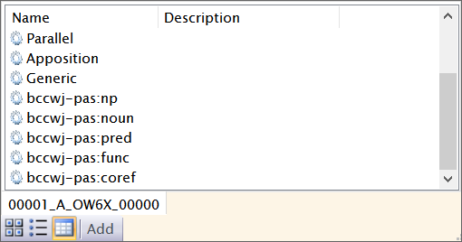
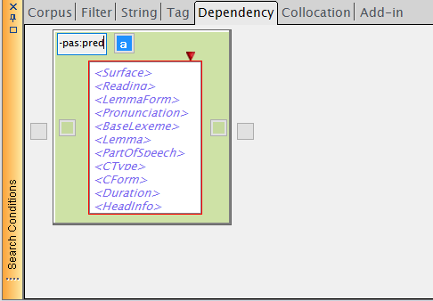
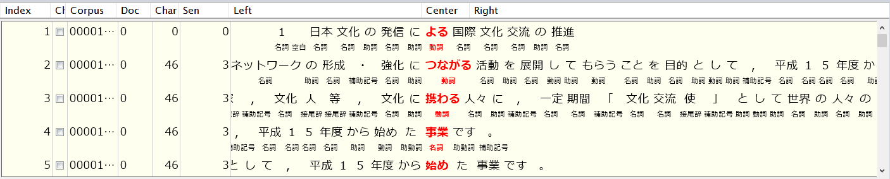
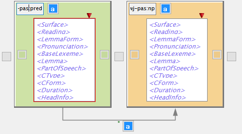
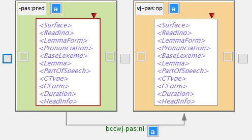
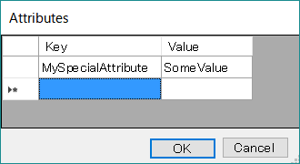
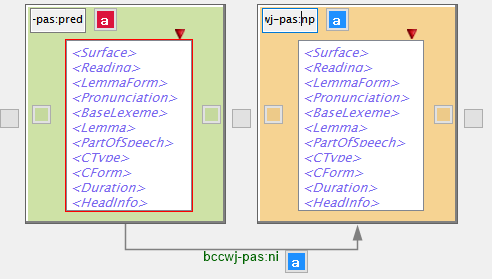

DependencySearchでSegment/Linkのパターンを検索する
基本編で説明したDependencySearchのパネルを使うと、文節・係り受けに限らない、一般的な Segment/Linkのパターンの出現をコーパスから検索することができます。
SegmentとそのTag種類を指定する
DependencySearchパネルの背景色付きのBox（"Segment Box"）の左上に、通常は"Bunsetsu"と 表示されたテキストボックスがあります。この上でマウスをクリックすると、現在選択されているコーパスの 持つSegment Tagの一覧がポップアップ表示されます。

（下部のツールバーにより、Tag一覧の表示形式を変えたり新しいTagを追加することもできます。）
この一覧から検索パターンに使いたいTagを一つ選択することにより、このSegment Boxの表すSegmentのTagを デフォルトの"Bunsetsu"から任意のものに変更することができます。 例えば、下記の状態では、このSegment Boxは"bccwj-pas:pred"という （BCCWJ述語項構造コーパスにおける）述語を表すSegmentにマッチすることを示します。

この条件で通常のDependencySearchと同様に検索を行うと、述語としてアノテーションされている語が KWICパネルにリストアップされます。

なお、Segment Boxに含まれるWord Boxは文節・係り受け検索の場合と同様、そのSegmentの範囲に含まれるWord に対する条件として指定することができます。（WordはSegment Box内に最低1個必要です。）
LinkとそのTag種類を指定する
2つ以上のSegment Boxを追加したときには、それらの間にLink条件を設定することができます。ひとつのSegment Boxの 内部（Word Box以外の色付き背景の場所）から他のSegment Boxの内部までマウスドラッグ操作を行うことにより、 その2つのBox間に関連線（Link条件）が追加できます。

Link条件は矢印で表され、その中央にLink Tag名が表示されています。デフォルトでは、Tagは"*"（アスタリスク）で、 任意の Link Tagにマッチすることを示していますが、このTag名の上で（マウスカーソルが"I"に変わった時に）クリック すると、Segment Tagと同様に、Link Tagを選択するポップアップが表示されますので、特定のTagにマッチさせたい 場合は、その中から一つTagを選択します。

上記の条件は、述語(pred)から名詞句(np)へ、「ニ」格での関連が存在するようなパターンを表しており、赤枠のWord Box（KWICに おける中心語）が述語Segment Boxの中にあることから、述語Segment内の任意のWordをKWICのCenterとして、この関連に当てはまる 生起をすべてリストします。
※ パターンは1文内に限られます。
Segment/Linkの属性(Attribute)に対する条件を追加する
Segment, Linkアノテーションには、属性(Attribute)を付加することができますが、付加されたAttributeを用いて Segment/Linkパターンの絞り込みを行うことが可能です。
Segment Box, Link条件のそれぞれのTag名の右側にあるボタンをクリックすると、 Key-Valueを入力する表を持ったポップアップが表示されます。

上記の例では、"MySpecialAttribute"という名称のAttributeを持っていてその値が"SomeValue"と一致するようなSegment/Linkのみが 合致するものとみなされます。（Attributeは複数指定可能で、論理ANDで結合されます。すなわち、すべてが合致することが要求されます。）
なお、Attributeに対する条件が指定されているSegment, Link条件は、ボタンの色が赤になります。
